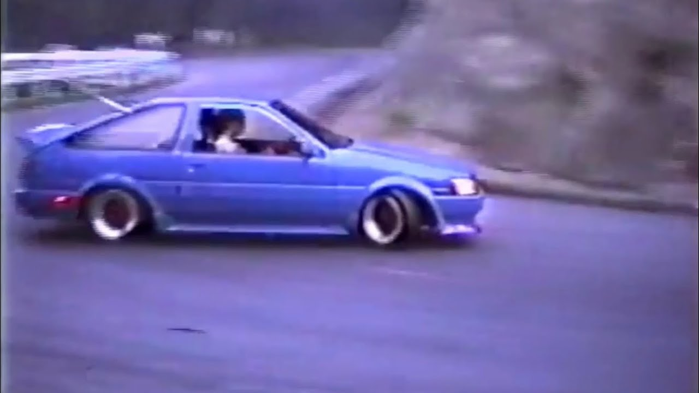
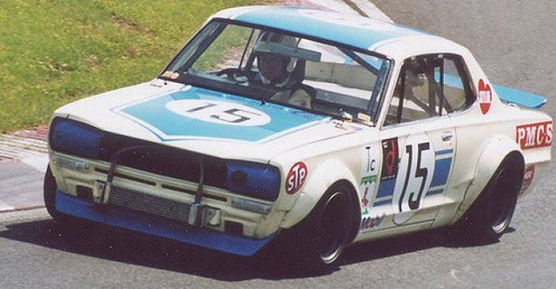

Drift
Drift ou Drifting (ドリフト走行 dorifuto sōkō?), é uma técnica de direção utilizada em carros, consiste em deslizar nas curvas escapando a traseira, girar o volante para que as rodas dianteiras estejam sempre em uma direção oposta a curva (se o carro vira para a direita então a roda deve estar a esquerda, e vice versa), controlando o nível de derrapagem, fazendo o carro literalmente andar de lado
História do drift
O drift moderno teve início no “All Japan Touring Car Championship races” há 48 anos atrás. O lendário piloto Kunimitsu Takahashi foi o criador da técnica em 1970. Ele ficou famoso batendo seu “apex” (o ponto onde o carro esta mais perto da curva) em alta velocidade e derrapando na curva, saindo da curva com mais velocidade que o normal. Depois dessa façanha ele ganhou uma legião de fãs que deram início ao drift japonês.
Um corredor de rua chamado Keiichi Tsuchiya ficou particularmente interessado no drift de Takahashi, Tsuchiya começou a praticar suas técnicas de drift nas montanhas do Japão, e rapidamente ganhou uma grande reputação. Em 1987, uma revista muito popular de tunning e carros concordou em produzir um vídeo sobre as habilidades de Tsuchiya, esse vídeo conhecido como Pluspy se tornou um hit e inspirou milhares de corredores profissionais de drift que correm nos circuitos atualmente. Em 1988 o diretor chefe da Option magazine Daijiro Inada ajudou a organizar o primeiro torneio especializado em drift.
O drift chegou ao Brasil em meados de 2006, mas só começou a se popularizar efetivamente e ganhar destaque no final de 2011 com o primeiro evento mensal promovido pela equipe DRIFT BR na Cidade de Itú, interior de SP, evento esse que foi de chamado Drift Day Soukoukai (nome também utilizado no japão para esse tipo de evento), sob o comando do Piloto, chefe de Equipe e organizador Sandro Freitas. No evento cada piloto ia com seu carro para a pista fechada para fazerem um verdadeiro show com os carros e ao mesmo tempo evoluir as técnicas do esporte. Atualmente o responsável pelo Drift no território Brasileiro é o Écio Moreira, que se encontra atualmente a tentar implementar um Campeonato nacional desta modalidade, participou no passado ano como responsável do martketing do CPD.
O lançamento do filme Velozes e Furiosos: Desafio em Tóquio também ajudou na divulgação da modalidade por todo o Brasil, tendo ,depois de sua estreia, vários documentários e matérias em jornais e revistas falanso sobre a modalidade. E, assim, logo vieram disputas e Campeonatos Regionais e Nacionais promovidos por algumas equipes.
Em 2017 ocorreu a primeira tentativa da FPAK (Federação Portuguesa de Automobilismo e Karting) de implementar em Portugal um campeonato federado de drift, sendo cancelado ao fim da terceira prova. Atualmente, em 2018, o CAM - Clube Automóvel do Minho, sob a égide da FPAK tornou-se o promotor do Campeonato de Portugal de Drift, havendo cinco provas em distintos pontos do país.
A primeira prova, organizada pelo próprio CAM, teve lugar em Guilhabreu no fim de semana de 2 e 3 de Junho, contando com mais de 30 pilotos inscritos nas 3 categorias (iniciados, semi Pro e Pro), esgotando a capacidade do circuito com a enorme afluência de público. Nesta prova o vencedor foi Diogo Correia, na categoria Pro.
A segunda prova, realizou-se em Pinhel, organizada pelo Clube Escape Livre, e contou com cerca de 40 pilotos inscritos. Durante o mês de Agosto, dias 22 e 23, onde sábado ocorreu no final do dia a Taça Internacional de Drift, inciativa do mesmo clube, onde 17 pilotos também se inscreveram. O vencedor deste fim de semana foi o jovem bracarense André Silva.
A terceira prova, a mais a sul do campeonato, contou com a organização do TVR - Associação Trial Voz de Reguengos e levou o drift ao alentejo à cidade de Reguengos de Monsaraz. Nesta prova com 32 inscritos, o vencedor foi Nelson Rocha.